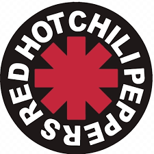

NOTHING ELSE MATTERS
So close, no matter how far Couldn't be much more from the heart Forever trusting who we are
and nothing else matters
Never opened myself this way Life is ours, we live it our way All these words I don't just say
and nothing else matters
Trust I seek and I find in you Every day for us something new Open mind for a different view
and nothing else matters
CHORUS
Never cared for what they do
never cared for what they know
but I know
So close, no matter how far Couldn't be much more from the heart Forever trusting who we are
and nothing else matters
CHORUS
Never cared for what they do
never cared for what they know
but I know
INSTRUMENTAL I
Never opened myself this way Life is ours, we live it our way All these words I don't just say
and nothing else matters
Trust I seek and I find in you Every day for us, something new Open mind for a different view
and nothing else matters
CHORUS
Never cared for what they say
never cared for games they play
never cared for what they do
never cared for what they know
and I know
INSTRUMENTAL II
So close, no matter how far Couldn't be much more from the heart Forever trusting who we are
No, nothing else matters.

 VER VIDEOS
VER VIDEOS
COME AS YOU ARE
Come as you are, as you were As I want you to be As a friend, as a friend As an old enemy
Take your time, hurry up Choice is yours, don't be late Take a rest, as a friend As an old memory, yeah
Memory, yeah Memory, yeah Memory, yeah
Come doused in mud, soaked in bleach As I want you to be As a trend, as a friend As an old memory, yeah
Memory, yeah Memory, yeah Memory, yeah
And I swear that I don't have a gun No, I don't have a gun No, I don't have a gun
Memory, yeah Memory, yeah Memory, yeah (No, I don't have a gun)
And I swear that I don't have a gun No, I don't have a gun No, I don't have a gun No, I don't have a gun
No, I don't have a gun Memory, yeah Memory, yeah.
 VER VIDEOS
VER VIDEOS
DON´T CRY
Talk to me softly There's something in your eyes Don't hang your head in sorrow And please don't cry I know how you feel inside I've I've been there before Somethin's changin' inside you And don't you know.
Coro
Don't you cry tonight I still love you, baby Don't you cry tonight Don't you cry tonight There's a heaven above you, baby And don't you cry tonight.
Give me a whisper And give me a sigh Give me a kiss before you Tell me goodbye
Don't you take it so hard now And please don't take it so bad I'll still be thinkin' of you And the times we had, baby.
Coro
And don't you cry tonight Don't you cry tonight Don't you cry tonight There's a heaven above you, baby And don't you cry tonight.
And please remember That I never lied Oh and please remember How I felt inside now, honey You gotta make it your own way But you'll be alright now, sugar You'll feel better tomorrow Come the morning light now, baby.
Coro
And don't you cry tonight And don't you cry tonight And don't you cry tonight
There's a heaven above you, baby And don't you cry Don't you ever cry Don't you cry tonight Baby, maybe someday Don't you cry Don't you ever cry Don't you cry
Tonight.
 VER VIDEOS
VER VIDEOS
UNDER THE BRIDGE
Sometimes I feel like I don't have a partner Sometimes I feel like My only friend Is the city I live in The city of angels Lonely as I am Together we cry.
I drive on her streets, 'cause She's my companion I walk through her hills, 'cause She knows who I am She sees my good deeds and She kisses me windy And I never worry Now that is a lie.
CORO
I don't ever wanna feel Like I did that day But take me to the place I love Take me all the way I don't ever wanna feel Like I did that day But take me to the place I love Take me all the way.
It's hard to believe that There's nobody out there It's hard to believe That I'm all alone At least I have her love The city, she loves me Lonely as I am Together we cry.
CORO
I don't ever wanna feel Like I did that day But take me to the place I love Take me all the way I don't ever wanna feel Like I did that day But take me to the place I love Take me all the way.
(Under the bridge downtown) Is where I drew some blood (Under the bridge downtown) I could not get enough (Under the bridge downtown) Forgot about my love (Under the bridge downtown) I gave my life away
Yeah, yeah Oh, no, no, no, no, yeah, yeah Oh, no, I said oh, yeah, yeah Here I stay
VER VIDEOS
I´M A HIGHWAY
Pearls and swine bereft of me Long and weary my road has been I was lost in the cities Alone in the hills No sorrow or pity For leaving, I feel.
Coro
I am not your rolling wheels I am the highway I am not your carpet ride I am the sky.
Friends and liars Don't wait for me Cause I'll get on All by myself I put millions of miles Under my heels And still Too close to you, I feel.
Coro
I am not your rolling wheels I am the highway I am not your carpet ride I am the sky I am not your blowing wind I am the lightning
I am not your autumn Moon I am the night The night.
Coro

 VER VIDEOS
VER VIDEOS